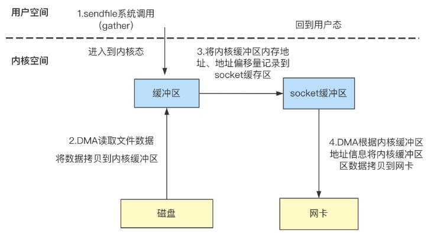

JavaIO与零拷贝
零拷贝
零拷贝定义：
零拷贝是指计算机执行IO操作时，CPU不需要将数据从一个存储区域复制到另一个存储区域，从而可以减少上下文切换以及CPU的拷贝时间。它是一种I/O操作优化技术。
虚拟内存与物理内存
操作系统为每个进程分配了独立的虚拟地址空间，也就是虚拟内存，虚拟地址空间又分为用户空间和内核空间，操作系统的位数不同，虚拟地址空间的大小也不同，32位操作系统虚拟地址内核空间为1G(2的32次方)，用户空间大小为3G，64位操作系统用户空间和内核空间大小各为128T：
- 虚拟内存空间可以远远大于物理内存空间
- 多个虚拟内存可以指向同一个物理地址
正是多个虚拟内存可以指向同一个物理地址，可以把内核空间和用户空间的虚拟地址映射到同一个物理地址，这样的话，就可以减少IO的数据拷贝次数啦，如mmap内存映射方式
内核空间与用户空间
用户空间：是运行用户程序代码的地方，为了保证系统内核的安全，它不能直接访问内存等硬件设备，必须通过系统调用进入到内核空间来访问那些受限的资源。
内核空间：是运行内核代码的地方，可以执行任意的指令访问系统资源，既可以访问内核空间也可以访问用户空间。
上下文切换
上下文 CPU 寄存器，是CPU内置的，容量小、但速度极快的内存。而程序计数器，则是用来存储 CPU 正在执行的指令位置、或者即将执行的下一条指令位置。它们都是 CPU 在运行任何任务前，必须的依赖环境，因此叫做CPU上下文。
上下文切换 先把前一个任务的CPU上下文（也就是CPU寄存器和程序计数器）保存起来，然后加载新任务的上下文到这些寄存器和程序计数器，最后再跳转到程序计数器所指的新位置，运行新任务。一般我们说的上下文切换，就是指内核（操作系统的核心）在CPU上对进程或者线程进行切换。进程从用户态到内核态的转变，需要通过系统调用来完成。系统调用的过程，会发生CPU上下文的切换。
普通的文件缓存I/O
因为磁盘I/O是比较耗时的操作,每次读文件的时候不能总是去磁盘中读，可以增加一层内核空间内存Page Cache，用于缓存读取的文件数据，用户空间进行系统调用读取文件内容时，首先会判断Page Cache中是否缓存了文件的内容，如果缓存了直接读取即可，否则再从磁盘读取。
读取过程如下：
- 应用程序调用read函数发起系统调用，此时由用户空间切换到内核空间;
- 内核通过DMA从磁盘拷贝数据到内核缓冲区（DMA复制，CPU耗时很少）;
- 将内核缓冲区的数据拷贝到用户空间的缓冲区（CPU复制），切换回用户空间;
JVM的堆内内存与堆外内存
在JAVA中，JVM划分了堆内存，平时创建的对象基本都在堆中，不过也可以通过NIO包下的ByteBuffer申请堆外内存DirectByteBuffer:也就是在堆内放了块
1 | ByteBuffer.allocateDirect(size); |
无论是普通IO或者是NIO，在进行文件读写的时候一般都会创建一个buffer作为数据的缓冲区，读写相关方法底层是通过调用native函数（JNI调用）来实现的，在进行读写时将buffer传递给JNI。
JNI一般使用C/C++代码实现，JNI底层调用C函数库时，要求buffer所在内存地址上的内容不能失效，但是JVM在进行垃圾回收的时候有可能对对象进行移动，导致地址发生变化，所以通过NIO进行文件读取的时候，从源码中可以明显看到对buffer的对象类型进行了判断，如果buffer是DirectByteBuffer类型，使用的是堆外内存，直接使用即可，反之则认为使用的是堆内内存，此时需要先申请一块堆外内存作为堆外内存buffer，然后进行系统调用，进行数据读取，读取完毕后将堆外内存buffer的内容再拷回JVM堆内内存buffer中。
详细过程：
- 发起JNI调用，创建堆外缓冲区；
- JNI中发起read系统调用，此时需要由用户空间切换到内核空间；
- 进入到内核空间，DMA读取文件数据到内核缓冲区；
- 将内核缓冲区的数据拷贝到用户缓冲区，切换回用户空间；
- 将堆外缓冲区的数据拷贝到JVM堆内缓冲区中；
实际中发生了三次拷贝。其中DMA一次，CPU两次
内存映射原理（mmap）
内存映射就是将内核空间和用户空间的虚拟地址映射到物理空间地址，每个进程维护了一张页表，记录虚拟地址和物理地址之间的映射关系，当进程访问的虚拟地址在页表中无法查到映射关系时，系统产生缺页异常，进入内核空间为虚拟地址分配物理内存，并更新页表，记录映射关系。
- 进行mmap系统调用，将文件和虚拟地址空间建立映射，注意此时还没有分配物理内存空间，只是在逻辑上建立了虚拟地址和文件之间的映射关系，物理内存只有真正使用的时候才会分配。
- 应用程序访问用户空间虚拟内存中的某个地址，发现无法在页表中查到数据，产生缺页异常，此时进入内核空间
- 因为不能直接使用物理地址，所以需要使用内核的虚拟地址临时建立与物理内存的映射关系，将文件内容读取到物理内存中，待数据读取完毕之后取消临时映射即可。
- 缺页异常处理完毕，物理内存中已经加载了文件的数据，此时用户空间就可以通过虚拟地址直接访问物理内存中映射的文件数据。
从内存映射整个过程看，与缓存I/O相比，少了从内核缓冲区将数据拷贝到用户缓冲区的步骤，减少了一次拷贝。
传统服务端文件下载IO执行流程
接收前端请求将服务daunt主机磁盘中的文件从已连接的socket发出去，实现如下：
1 | while((n = read(diskfd, buf, BUF_SIZE)) > 0) |
传统的IO流程，包括read和write的过程。
read：把数据从磁盘读取到内核缓冲区，再拷贝到用户缓冲区write：先把数据写入到socket缓冲区，最后写入网卡设备。
j具体实现流程：
- 用户应用进程调用read函数，向操作系统发起IO调用， 上下文从用户态转为内核态（切换1）
- DMA控制器把数据从磁盘中，读取到内核缓冲区。
- CPU把内核缓冲区数据，拷贝到用户应用缓冲区， 上下文从内核态转为用户态（切换2），read函数返回
- 用户应用进程通过write函数，发起IO调用， 上下文从用户态转为内核态（切换3）
- CPU将用户缓冲区中的数据，拷贝到socket缓冲区
- DMA控制器把数据从socket缓冲区，拷贝到网卡设备， 上下文从内核态切换回用户态（切换4），write函数返回
从流程图可以看出，传统IO的读写流程，包括了4次上下文切换（4次用户态和内核态的切换），4次数据拷贝（两次CPU拷贝以及两次的DMA拷贝)，
零拷贝实现方式
首先零拷贝并不是没有拷贝数据，而是减少用户态/内核态的切换次数以及CPU拷贝的次数。零拷贝实现有多种方式，分别是
- mmap
- sendfile
- 带有DMA收集拷贝功能的sendfile
mmap实现的零拷贝
mmap实现零拷贝是基于虚拟内存原理，即把内核空间和用户空间的虚拟地址映射到同一个物理地址，节省一次将内核缓存区数据拷贝到用户空间。
- 用户进程通过
mmap方法向操作系统内核发起IO调用， 上下文从用户态切换为内核态。 - CPU利用DMA控制器，把数据从硬盘中拷贝到内核缓冲区，这里用户空间就可以访问到数据。
- 上下文从内核态切换回用户态，mmap方法返回。
- 用户进程通过
write方法向操作系统内核发起IO调用， 上下文从用户态切换为内核态。 - CPU将内核缓冲区的数据拷贝到的socket缓冲区。
- CPU利用DMA控制器，把数据从socket缓冲区拷贝到网卡， 上下文从内核态切换回用户态，write调用返回。
可以发现，mmap实现的零拷贝，I/O发生了4次用户空间与内核空间的上下文切换，以及3次数据拷贝。其中3次数据拷贝中，包括了2次DMA拷贝和1次CPU拷贝。
mmap是将读缓冲区的地址和用户缓冲区的地址进行映射，内核缓冲区和应用缓冲区共享，所以节省了一次CPU拷贝‘’并且用户进程内存是虚拟的，只是映射到内核的读缓冲区，可以节省一半的内存空间。
sendfile实现的零拷贝
sendfile是Linux2.1内核版本后引入的一个系统调用函数，API如下：
1 | ssize_t sendfile(int out_fd, int in_fd, off_t *offset, size_t count); |
- out_fd:为待写入内容的文件描述符（文件描述符就是内核为了高效管理已被打开的文件所创建的索引，用来指向被打开的文件），一个socket描述符。，
- in_fd:为待读出内容的文件描述符，必须是真实的文件，不能是socket和管道。
- offset：指定从读入文件的哪个位置开始读，如果为NULL，表示文件的默认起始位置。
- count：指定在fdout和fdin之间传输的字节数。
sendfile表示在两个文件描述符之间传输数据，它是在操作系统内核中操作的，避免了数据从内核缓冲区和用户缓冲区之间的拷贝操作，因此可以使用它来实现零拷贝。
sendfile+gather实现的零拷贝
linux 2.4版本之后，对sendfile做了优化升级，引入SG-DMA技术，其实就是对DMA拷贝加入了scatter/gather操作，它可以直接从内核空间缓冲区中将数据读取到网卡。使用这个特点，即还可以多省去一次CPU拷贝。

详细流程：
- 用户进程发起sendfile系统调用， 上下文（切换1）从用户态转向内核态
- DMA控制器，把数据从硬盘中拷贝到内核缓冲区。
- CPU把内核缓冲区中的 文件描述符信息（包括内核缓冲区的内存地址和偏移量）发送到socket缓冲区
- DMA控制器根据文件描述符信息，直接把数据从内核缓冲区拷贝到网卡
- 上下文（切换2）从内核态切换回用户态，sendfile调用返回。
可以发现，sendfile+DMA scatter/gather实现的零拷贝，I/O发生了2次用户空间与内核空间的上下文切换，以及2次数据拷贝。其中2次数据拷贝都是包DMA拷贝。这就是真正的 零拷贝（Zero-copy) 技术，全程都没有通过CPU来搬运数据，所有的数据都是通过DMA来进行传输的。
java提供的零拷贝方式
- Java NIO对mmap的支持
- Java NIO对sendfile的支持
Java NIO对mmap的支持
MappedByteBuffer：Java NIO有一个MappedByteBuffer的类，可以用来实现内存映射。它的底层是调用了Linux内核的mmap的API。
使用MappedByteBuffer向网络中发送数据的过程如下：
- 使用MappedByteBuffer建立文件映射，用户空间可以通过虚拟地址直接访问映射的文件数据；
- 将映射的文件数据拷贝到socket网络缓冲区（CPU复制）；
- DMA将socket缓冲区的数据拷贝到网卡（DMA复制）；
举例
1 | public class MmapTest { |
Java NIO对sendfile的支持（真正的零拷贝）
FileChannel的transferTo()/transferFrom()，底层就是sendfile() 系统调用函数。Kafka 这个开源项目就用到它。
1 |
|
举例如下：
1 | public class SendFileTest { |